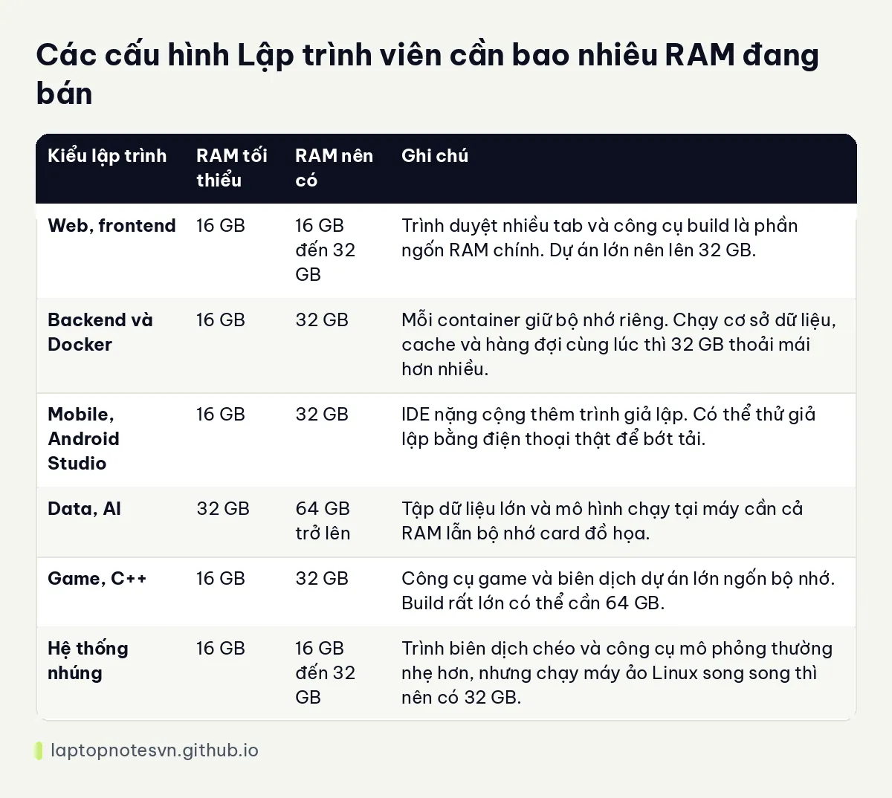

Lập trình viên cần bao nhiêu RAM - Chọn 16 GB, 32 GB hay 64 GB?
RAM là thứ lập trình viên chạm giới hạn sớm nhất. Chip có mạnh đến đâu mà bộ nhớ đầy thì máy vẫn phải dùng ổ cứng để thay, và lúc đó cả cửa sổ soạn code lẫn trình duyệt đều khựng. Bài này đi qua từng mức 8, 16, 32 và 64 GB, rồi chia theo kiểu lập trình để bạn tự đối chiếu với công việc của mình.
Các mức RAM trong bài là kinh nghiệm chung khi tư vấn máy cho dân code, không phải số đo cố định. Dự án của mỗi người một khác, nên hãy xem đây là điểm xuất phát chứ không phải ngưỡng cứng.
RAM làm gì khi bạn viết code
Người mới hay nghĩ trình soạn code chỉ là một ứng dụng nhẹ. Thực tế một buổi làm việc thường mở cùng lúc nhiều thứ, và mỗi thứ giữ một phần RAM cho riêng nó.
- Trình soạn code và IDE: VS Code khá gọn, nhưng IntelliJ, Android Studio hay Visual Studio lập chỉ mục cả dự án nên chiếm nhiều hơn hẳn, nhất là khi cài thêm plugin.
- Trình duyệt: vài chục tab tài liệu, Stack Overflow, trang đang phát triển và công cụ dành cho nhà phát triển cộng lại là một khoản đáng kể.
- Docker và máy ảo: mỗi container cơ sở dữ liệu, cache hay hàng đợi tin nhắn đều giữ bộ nhớ riêng. Trên Windows, Docker Desktop còn chạy qua một lớp ảo hóa nên phải dành sẵn một phần RAM cho nó.
- Trình giả lập: giả lập Android hoặc iOS chạy gần như một máy điện thoại thu nhỏ bên trong máy của bạn.
- Công cụ phụ: ứng dụng chat, họp video, công cụ gọi API, phần mềm quản lý cơ sở dữ liệu cũng chạy nền suốt ngày.
Cộng các thứ đó lại, bạn sẽ thấy vì sao cùng một chip nhưng máy 16 GB và 32 GB cho cảm giác rất khác khi làm việc nhiều giờ liền.
8 GB còn dùng được không
Với việc học những bài đầu tiên, viết script nhỏ hoặc làm bài tập trên lớp thì 8 GB vẫn chạy được, nhưng chỉ khi bạn kỷ luật: đóng bớt tab, không bật Docker, không mở giả lập. Chỉ cần thêm một trình giả lập hoặc vài container là máy bắt đầu chậm.
Nếu bạn định theo nghề lâu dài, mua máy 8 GB là tiết kiệm sai chỗ. Phần lớn máy mỏng nhẹ hiện nay còn hàn RAM vào bo mạch, nên 8 GB nghĩa là gắn với mức đó đến hết vòng đời máy.
16 GB - mức nền cho học code và lập trình web
Nếu bạn học lập trình, viết web bằng JavaScript, Python, PHP hoặc làm backend nhỏ, 16 GB là mức nên coi là tối thiểu hiện nay. Một trình soạn code, trình duyệt nhiều tab và một hai dịch vụ chạy nền vẫn nằm trong tầm của mức này.
Giới hạn của 16 GB lộ ra khi bạn mở Docker kèm cơ sở dữ liệu, hoặc vừa dùng IDE nặng vừa chạy giả lập. Khi đó hệ điều hành phải đẩy dữ liệu sang ổ cứng và bạn sẽ thấy máy khựng ở những lúc không ngờ tới.
Ví dụ ở nhóm này có HP EliteBook 8 G2i 14 Next Gen AI (2026) với 16 GB LPDDR5X hàn trên bo mạch, chạy kênh đôi. Trang sản phẩm cũng nói rõ RAM không nâng cấp được, nên ai làm việc nặng hơn web cơ bản thì nên chọn một máy có bản 32 GB. Bạn có thể xem thêm ở bài HP EliteBook 8 G2i 14 cho lập trình.
32 GB - mức dễ chịu cho đa số dân code chuyên nghiệp
Chạy Docker với vài container cơ sở dữ liệu, mở Android Studio kèm trình giả lập, dùng IntelliJ cho dự án lớn hay làm việc trong nhiều môi trường cùng lúc thì 32 GB giúp máy không phải đẩy dữ liệu sang ổ cứng liên tục. Đây cũng là mức nhiều công ty phần mềm chọn khi cấp máy cho nhân viên.
Điểm cộng của 32 GB là bạn không còn phải tính toán từng tab hay từng container. Làm việc trơn tru hơn ở chỗ đó, chứ không phải chip chạy nhanh hơn.
Hai máy 14 inch hay gặp ở mức này là Lenovo ThinkPad T14 Gen 7 (2026), cả hai bản đang bán đều có 32 GB, và DELL XPS 13 DX13260 (2026), có cả bản 16 GB lẫn 32 GB. Chi tiết từng máy nằm ở bài ThinkPad T14 Gen 7 cho lập trình và bài Dell XPS 13 cho lập trình.
64 GB trở lên - máy ảo, build lớn, chạy AI tại máy
64 GB dành cho người chạy nhiều máy ảo cùng lúc, build dự án C++ lớn, làm việc với tập dữ liệu nằm hẳn trong bộ nhớ hoặc thử mô hình AI ngay trên laptop. Nhóm này thường đi kèm card đồ họa rời, nên nên chọn máy trạm để có tản nhiệt tốt hơn và nhiều lựa chọn RAM hơn.
Với mô hình AI chạy tại máy, dung lượng bộ nhớ của card đồ họa cũng quan trọng không kém RAM hệ thống, nên hãy nhìn cả hai thông số khi chọn bản.
Hai máy trạm có bản 64 GB là Lenovo ThinkPad P1 Gen 8 - Mobile WorkStation (2025), gọn hơn và dễ mang đi, và Lenovo ThinkPad P16 Gen 3 - Mobile WorkStation (2025), cỡ 16 inch nặng hơn nhưng có khe để nâng RAM. Hai bài chi tiết là ThinkPad P1 Gen 8 cho lập trình và ThinkPad P16 Gen 3 cho lập trình.
Theo từng kiểu lập trình
Bảng dưới là mức tham khảo, đúng cho phần lớn trường hợp thông thường. Dự án đặc biệt lớn có thể cần hơn.

| Kiểu lập trình | RAM tối thiểu | RAM nên có | Ghi chú |
|---|---|---|---|
| Web, frontend | 16 GB | 16 GB đến 32 GB | Trình duyệt nhiều tab và công cụ build là phần ngốn RAM chính. Dự án lớn nên lên 32 GB. |
| Backend và Docker | 16 GB | 32 GB | Mỗi container giữ bộ nhớ riêng. Chạy cơ sở dữ liệu, cache và hàng đợi cùng lúc thì 32 GB thoải mái hơn nhiều. |
| Mobile, Android Studio | 16 GB | 32 GB | IDE nặng cộng thêm trình giả lập. Có thể thử giả lập bằng điện thoại thật để bớt tải. |
| Data, AI | 32 GB | 64 GB trở lên | Tập dữ liệu lớn và mô hình chạy tại máy cần cả RAM lẫn bộ nhớ card đồ họa. |
| Game, C++ | 16 GB | 32 GB | Công cụ game và biên dịch dự án lớn ngốn bộ nhớ. Build rất lớn có thể cần 64 GB. |
| Hệ thống nhúng | 16 GB | 16 GB đến 32 GB | Trình biên dịch chéo và công cụ mô phỏng thường nhẹ hơn, nhưng chạy máy ảo Linux song song thì nên có 32 GB. |
RAM hàn chết hay có khe nâng cấp
Đây là điểm dễ bỏ sót khi mua máy. Nhiều laptop mỏng nhẹ hàn RAM trực tiếp lên bo mạch, nên dung lượng lúc mua là dung lượng bạn có đến hết vòng đời máy. Theo dữ liệu trang sản phẩm, DELL XPS 13 DX13260 (2026) thuộc nhóm này: RAM LPDDR5X hàn onboard, tối đa 16 GB ở bản Core 5 320 và 32 GB ở bản Core Ultra 7 355.
Cũng có hướng khác. LPCAMM2 là dạng mô-đun RAM tháo ra thay được dù vẫn là loại tiết kiệm điện. Mô tả của ThinkPad T14 Gen 7 ghi bộ nhớ LPCAMM2 tối đa 64 GB, Dell Pro Max 14 MC14250 cũng dùng LPCAMM2 với tùy chọn từ 16 GB đến 64 GB, còn ThinkPad P1 Gen 8 ghi LPCAMM2 tối đa 64 GB. Nhóm máy trạm cỡ 16 inch thì có khe riêng: ThinkPad P16 Gen 3 nâng được tới 192 GB qua 4 khe SODIMM theo mô tả sản phẩm.
Lời khuyên thực tế: nếu máy hàn RAM, hãy chọn bản lớn hơn nhu cầu hiện tại một bậc. Nếu máy có khe hoặc LPCAMM2, bạn có thể mua mức vừa đủ và nâng sau, miễn là kiểm tra kỹ loại RAM tương thích trước khi mua.
Kênh đôi và tốc độ RAM
Ngoài dung lượng, RAM chạy kênh đôi cho băng thông cao hơn kênh đơn. Với laptop hàn RAM, cấu hình kênh đôi thường đã có sẵn, ví dụ bản 16 GB của HP EliteBook 8 G2i ghi rõ chạy kênh đôi. Với laptop dùng khe, nên lắp đủ hai thanh giống nhau thay vì chỉ một thanh lớn.
Tốc độ RAM, tính bằng MT/s, ảnh hưởng ít hơn so với dung lượng trong công việc lập trình thông thường. Nếu phải chọn giữa 16 GB tốc độ cao và 32 GB tốc độ thấp hơn, đa số dân code nên ưu tiên dung lượng.
Gợi ý máy theo mức RAM
Danh sách dưới chọn theo RAM thật của từng bản đang bán tại Hưng Phát Laptop. Cấu hình có thể thay đổi theo kho, nên hãy kiểm tra trên trang sản phẩm trước khi quyết.
- 16 GB, học code và web: HP EliteBook 8 G2i 14 có đúng một bản 16 GB hàn kênh đôi, hợp học code và web.
- 32 GB, mỏng nhẹ, đi lại nhiều: bản Core Ultra 7 355 của DELL XPS 13 DX13260 có 32 GB, hợp dev web và backend vừa phải.
- 32 GB và có đường nâng lên 64 GB: ThinkPad T14 Gen 7 (2026) có hai bản 32 GB, mô tả ghi LPCAMM2 tối đa 64 GB.
- 32 GB kèm card đồ họa rời: DELL Pro Max 14 MC14250 - Mobile Workstation (2025) có bản 32 GB đi với RTX PRO 500 6 GB, hợp dev cần thử CUDA ở quy mô nhỏ. Xem bài Dell Pro Max 14 MC14250 cho lập trình.
- 64 GB, máy trạm gọn: ThinkPad P1 Gen 8 có bản Core Ultra 9 285H với 64 GB và RTX PRO 2000 8 GB.
- 64 GB, ưu tiên nâng cấp về sau: ThinkPad P16 Gen 3 có bản Core Ultra 9 285HX với 64 GB và RTX PRO 4000 16 GB, RAM nâng được qua khe SODIMM.
Tóm lại
Học code và làm web: 16 GB là mức nền. Dân code chuyên nghiệp dùng Docker, giả lập, IDE nặng: 32 GB. Máy ảo, build lớn, dữ liệu và AI tại máy: 64 GB trở lên. Trước khi chốt, hãy xem máy hàn RAM hay có khe, vì điều đó quyết định bạn có sửa được quyết định mua sai sau này hay không.
Chọn đúng RAM ngay từ đầu giúp máy dùng tốt thêm nhiều năm, và thường rẻ hơn việc đổi máy sớm.
Đăng ngày 08/11/2026